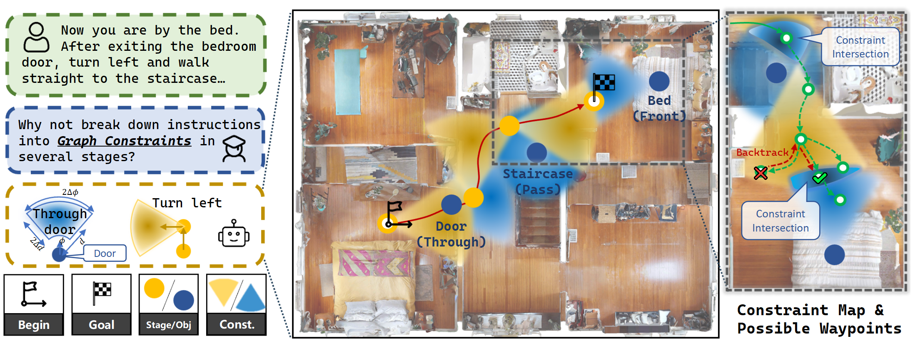
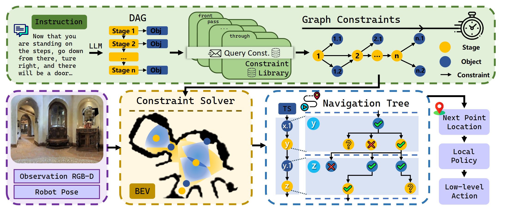
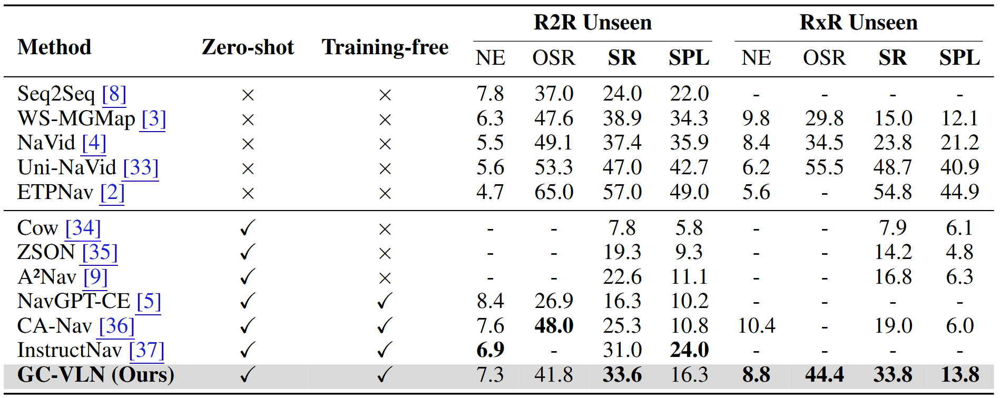
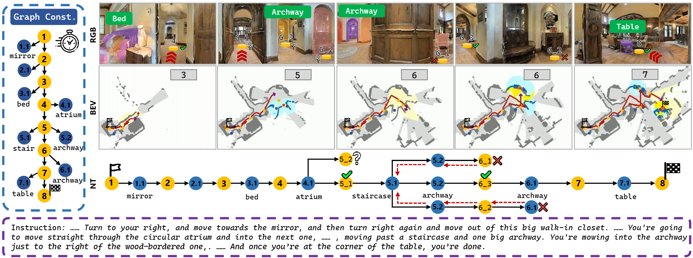
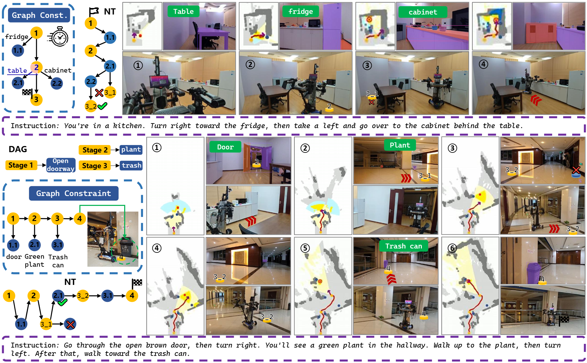

In this paper, we propose a training-free framework for vision-and-language navigation (VLN). Existing zero-shot VLN methods are mainly designed for discrete environments or involve unsupervised training in continuous simulator environments, which makes it challenging to generalize and deploy them in real-world scenarios. To achieve a training-free framework in continuous environments, our framework formulates navigation guidance as graph constraint optimization by decomposing instructions into explicit spatial constraints. The constraint-driven paradigm decodes spatial semantics through constraint solving, enabling zero-shot adaptation to unseen environments. Specifically, we construct a spatial constraint library covering all types of spatial relationship mentioned in VLN instructions. The human instruction is decomposed into a directed acyclic graph, with waypoint nodes, object nodes and edges, which are used as queries to retrieve the library to build the graph constraints. The graph constraint optimization is solved by the constraint solver to determine the positions of waypoints, obtaining the robot's navigation path and final goal. To handle cases of no solution or multiple solutions, we construct a navigation tree and the backtracking mechanism. Extensive experiments on standard benchmarks demonstrate significant improvements in success rate and navigation efficiency compared to state-of-the-art zero-shot VLN methods. We further conduct real-world experiments to show that our framework can effectively generalize to new environments and instruction sets, paving the way for a more robust and autonomous navigation framework.

Approach
Framework of GC-VLN. We construct a constraint library, containing all the spatial relationship mentioned by navigation instruction. The instruction is decomposed into a directed acyclic graph (DAG) and used to query the library to get the graph constraints. The constraint solver determines the path by solving the graph constraint optimization. According to the topological sort (TS) of graph constraint, we build the navigation tree, where the number of leaf nodes equals the number of graph constraint solutions. In graph constraint and TS, t.i means the i-th object node in stage t.

Experiments
We evaluate our method on R2R-CE and RxR-CE.

Navigation results on R2R-CE and RxR-CE. We mainly compare the Success Rate (SR) and success rate weighted by path length (SPL) of state-of-the-art methods in different settings.

Demonstration of the graph constraints solving of GC-VLN. Here t_i is the i-th branch node of the t-th level of navigation tree.

Demonstration of deployment in real-world environment.
Bibtex
@article{yin2025gcvln,
title={GC-VLN: Instruction as Graph Constraints for Training-free Vision-and-Language Navigation},
author={Hang Yin and Haoyu Wei and Xiuwei Xu and Wenxuan Guo and Jie Zhou and Jiwen Lu},
journal={arXiv preprint arXiv:2509.10454},
year={2025}
}
 Paper (arXiv)
Paper (arXiv)
 Code (GitHub)
Code (GitHub)